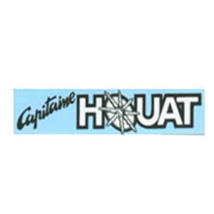
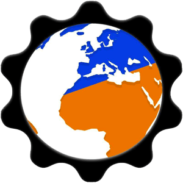

Formation Simplon Développeur web
Je suis actuellement une formation en développeur web. La fin de la formation est prévu pour mars 2022.

J'ai effectué 3 mois de BootCamp en distancielle.
J'ai appris le langage HTML, CSS que je maitrise, également JS, PHP ou j'ai apperçu ce langage. Je maitrises également, BootStrap, Wordpress, GitHub.
Opérateur de commande pendant plus d'un an et demi :
- De novembre 2019 à février 2021
- De juillet 2019 à aout 2019
- De juillet 2018 à aout 2018
1 semaine de test (technique et physique)
Afin de déployer le systéme informatique sur les bases des opérations exterieurs (OPEX) au mois de novembre à Nancy.
L'association Q&DInformatique
Je suis vice-président de l'association Q&DInformatique. Créer en 2017, nous avons pour but d'apporter notre savoir faire en informatique en vers les personnes qui se trouve en difficulté.
Voici le lien vers notre page Facebook : Q&DInformatique